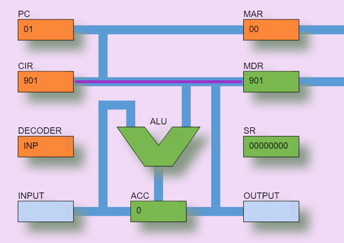
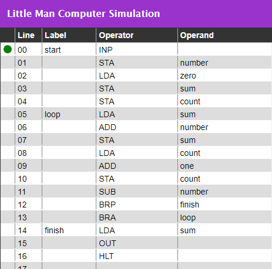
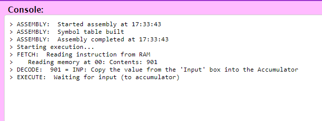
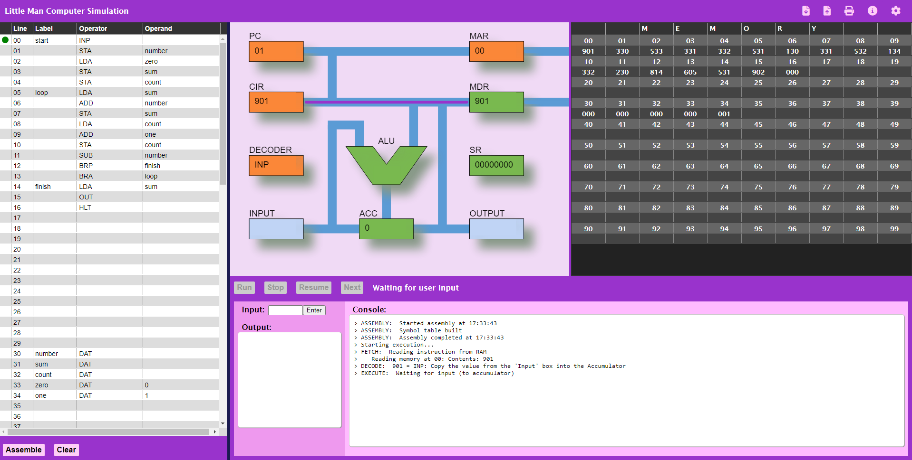

Esse site contém uma implementação do Little Man Computer
O simulador é implementado usando JavaScript, HTML e CSS e roda inteiramente no navegador WEB.
É completamente funcional, e inclui diversos programas de exemplo.
Minha intenção foi criar uma aplicação web simples de usar para ajudar os estudantes a programas na linguagem do LMC.
Essa aplicação possui um diagrama clicável da CPU, que é animado quando um programa LMC é executado, mostrando os valores nos registradores principais, o fluxo de dados dentro da CPU, e as atividades de leitura e escrita na memória.

Clicando em um registrador quando um programa não está rodando irá apresentar uma breve descrição. Os registradores apresentados são:
| Registrador | Nome | Proposta |
|---|---|---|
| PC | Program Counter (Contador de Programa) | O Contador de Programa contém o endereço da próxima instrução a ser buscada da memória. Se você observar atentamente durante a execução de um programa, irá ver que o PC incrementa em 1 imediatamente após uma instrução ser lida da memória. As instruções de ramificação ('BRA', 'BRZ', e 'BRP') podem mudar o valor do PC, causando um salto na execução do programa para um novo endereço de memória. |
| CIR | Current Instruction Register (Registrador de Instrução Atual) | O Registrador de Instrução Atual contém a última instrução buscada da memória via o MDR. Antes da instrução ser executada, ele deve ser decodificado em uma série de sinais pelo Decodificador. |
| Decoder | Decoder (Decodificador, parte da Unidade de Controle) | O Decodificador pega o código de instrução do CIR e transforma ele em uma série de sinais para controlar a execução da instrução. |
| Input | Input Mailbox (Caixa de entrada) | A caixa de entrada é usada para segurar a entrada de dado do usuário antes dele ser movido para o acumulador. Quando uma instrução 'INP' é executada, o usuário é solicitado a entrar com o valor que será colocado na caixa de entrada e então movido para o acumulador. |
| ALU | Arithmetic and Logic Unit (Unidade Lógica e Aritmética) | A Unidade Lógica e Aritmética é responsável pelas operações de 'ADD' e 'SUB'. Em um processador moderno, a ALU seria muito mais complexa, mas o conjunto de instruções do LMC possui apenas essas duas operações. |
| ACC | Accumulator (Acumulador) | O Acumulador normalmente mantem o resultado da última operação resultante da ALU, mas um valor pode ser diretamente carregada no acumulador advinda da memória, usando a instrução 'LDA'. É possível escrever o valor atual do acumulador na memória usando a instrução 'STA'. Finalmente, o acumulador pode ser carregado por uma entrada do usuário (instrução 'INP') ou usado como saída para o usuário (instrução 'OUT'). |
| MAR | Memory Address Register (Registrador de Endereço de Memória) | O Registrador de Endereço de Memória mantém um endereço para um local da memória que será lido ou escrito. Em uma operação de leitura (que poderia estar buscando uma instrução ou lendo um dado), o valor no endereço de memória será recuperado e colocado na MDR. Em uma operação de escrita (parte da instrução 'STA'), o valor no MDR será escrito na memória no endereço especificado. |
| MDR | Memory Data Register | The Memory Data Register holds a value which has either been read from Memory, or which is about to be written to Memory. It is important to note that this value can be either an instruction or data. In the case of an instruction, this will always have been read from Memory as part of the Fetch-Execute-Decode cycle. In the case of data, the value may have been read from memory (in an 'LDA', 'SUB' or 'ADD' instruction) or be written to Memory (in an 'STA' instruction). |
| SR | Status Register | The Status Register is an important component in any modern processor. When the ALU has completed an operation, the Status Register is updated with information about that operation. In this simulator, only three bits are used: the Least Significant Bit (bit 0) is an overflow flag - if the result of an addition is greater than 999, or the result of a subtraction is less than -999, this flag will be set to 1. Bit 1 is used to record whether the result of an operation is zero, and bit 2 is used to record whether the result of an operation is positive (zero or more). Bits 1 and 2 are used in the 'BRZ' and 'BRP' operations. |
| Output | Output Mailbox | The 'mailbox' used to hold output from the Accumulator. When an 'OUT' instruction is executed, the value currently held in the Accumulator is moved into this mailbox and then displayed to the user. |
The code editor is based on a table design, making it easy to separate labels, operators, and operands
When a program is running, the current line of code is shown with a green dot, and the value of variables is updated in the Code Editor as well as in memory

Programs can be saved to local disk storage, uploaded from local storage, and converted to PDF for printing (or including in project reports).
When an LMC program is running, the console provides a summary of each operation.

The Little Man Computer simulator app can be found here

If you have any questions or comments on this LMC simulator, please contact me
The source code for this LMC simulator is available under the GNU General Public License v3.0.